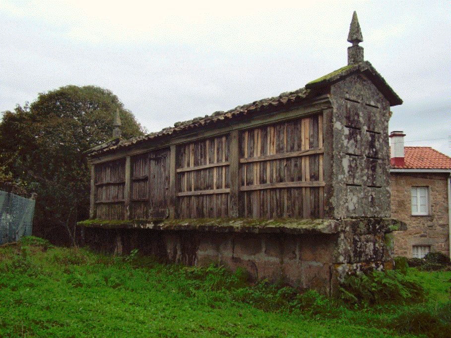

Tarrío é unha das aldeas de San Xián de Laíño, no sopé dun altorelo suave, mirando cara as brañas da cor do limón. As casas arremuíñanse arredor das eiras e apéganse ós muros altos do pazo que foi dos Ballesteros. A Banda e o Rueiro, do lado de riba da estrada, son barrios da aldea. Dúas son as posibilidades que se barallan para dar conta da súa etimoloxía. A meirande parte dos autores entenden hoxe que a documentación antiga proba que Tarrío é forma composta pola preposición tras (TRANS en latín) e polo sustantivo río (lat. RIVU). Sería entón o seu significado ‘máis alá do río’ ou ‘tras do río’. Podería ser así tendo en conta que preto da aldea, cara o nacente, pasa un pequeno río co mesmo nome, pero hai quen non desbota aínda a idea de que se formara a partir de tarreo ou terreo, do latín TERRENUS. No libro do notario Álvaro Pérez figura sempre como “lugar de Terrío” e con ese nome aparecen varios veciños no ano 1457: Pero de Terrío e a súa muller María de Terrío e Johán de Bustelo morador en Terrío. A aldea de Tarrío de lonxe parece vila, se non foran os outeiros que ten do lado de riba é cantiga dos vellos. Nas brañas están Os Tarríos, á beira do esteiro que se cruzaba por unha pontelliña de pedra. En Tarrío demorou os seus días breves Eusebio Lorenzo Baleirón: “Mal coñecín a sombra dos meus pasos, lugares nun relanzo onde medrar a hedra abeirado da chuva do tarrío con névoa cando o outono pasaba de camiño das brañas”
